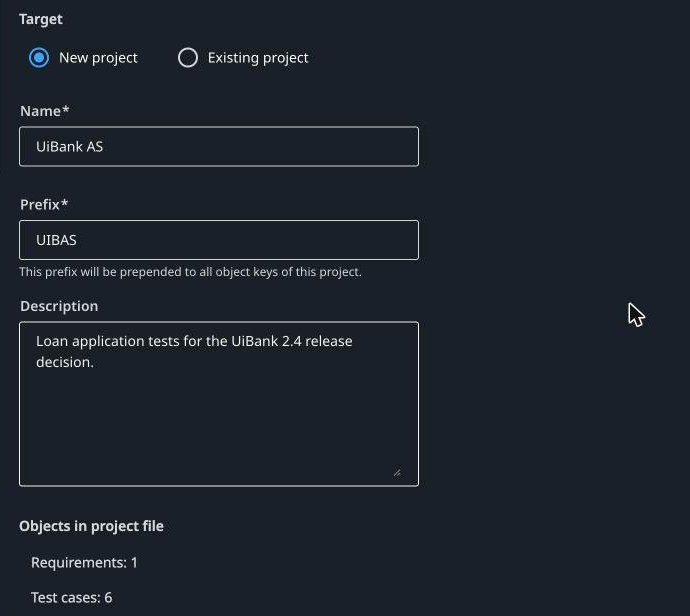
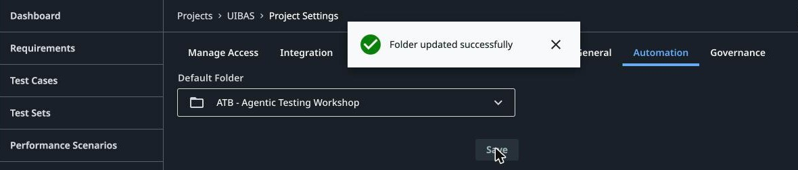

1. Import Your Project and Meet Autopilot Chat¶
Why it matters for you: you get your own copy of the UiBank release project, and a chat assistant that answers questions about it in seconds instead of clicking through every page.
You start from a ready-made UiBank project: one requirement, six test cases, a test set, past results and attachments. Start the import as soon as you arrive – it runs in the background while the trainer introduces the day.
Download the project file¶
- Download Agentic Testing Workshop - Sample Test Manager Project.zip.
- Unzip it. You'll import the
.tmhfile inside.
Import it into Test Manager¶
- Open Test Manager in the workshop tenant,
<ORG>/<TENANT>. Your trainer gives you the link. - On Projects, select Import project, then Add file and select the
.tmhfile. Keep Target: New project. -
The file fills in a name, a prefix and a description. Replace all three, so your project is unique on the shared tenant:
Field Pre-filled Type instead Name UiBank Project UiBankplus your initials, for exampleUiBank ASPrefix (the project key) UIBWS UIBplus your initials, for exampleUIBASDescription a sentence about the original technical workshop Loan application tests for the UiBank 2.4 release decision.Use initials, not your full name: everyone on the tenant sees the project list.
-
Clear Include automation information for test cases (it's checked by default). Leave Import governance information and Import project configuration cleared.
- Select Import, then OK when the upload completes.

Important
✅ Clear Include automation information for test cases before you select Import.
✅ The import runs in the background and takes 3–15 minutes (about 3 minutes in rehearsal), longer when the whole class imports at once. Refresh Projects until your project card shows Created on instead of Import in progress…. Don't link the folder or open Autopilot chat before then.
✅ Don't see your card? Search for your project name on Projects. The project Dashboard may show No results: the imported results are older than its date range. You'll see your own results there from step 4 on.
Who ran the old tests?
The imported results keep the name of the person who ran them originally, under Executed By. That's history from the sample project, not a person on your team.
Link the project to the workshop folder¶
To run tests on robots later today, Test Manager needs to know which Orchestrator folder to use. Orchestrator is where the robots live; your trainer set up one shared folder for the class.
It's your turn now!
- In your project, go to Project Settings and open the Automation tab.
- Set Default Folder to the folder your trainer gives you: in this workshop, ATB - Agentic Testing Workshop. Type part of its name to filter the list.
- Click Save. A message confirms Folder updated successfully.

Skipped this step?
Robot runs fail with HTTP 400: Please assign folder to project level before executing testcases.
The workshop folder isn't in the Default Folder list? You're not assigned to it yet. Ask your trainer.
Open Autopilot chat¶
Autopilot chat is an assistant inside Test Manager. You ask in plain words; it reads your project, searches the documentation, builds charts and – with your approval – makes changes.
- Open your project first. The Autopilot icon (a sparkle) is in the top bar, next to the notifications bell, and it only appears inside a project – not on the project list.
- Select it. The Autopilot panel opens on the right, with the question "How can I assist you with test management?".
-
Under the text box, check the mode selector. Test Manager offers two modes:
Mode What it does Today Edit Shows each action Autopilot wants to take and waits for your Accept or Reject ✅ Use this one all day Agent Runs actions without asking Don't use it in the workshop If it shows Agent, switch it to Edit.

Edit mode asks for every action – reads included
In Edit mode, Autopilot shows a card for each action it takes in Test Manager – the action's name, "via MCP server: testmanager", and Reject / Accept – even when it only reads your project. One question can ask for 5 or more approvals. Read each card, then select Accept. It's slower, but you always see what Autopilot does on your behalf. Searches and charts run without a card.
These actions are called tools. You'll learn what they are, and what they can't do, in 7. Build and Run the Regression Set.
Every chat turn uses your AI allowance
Each message you send to Autopilot chat uses your AI and agentic usage pool. The dedicated Autopilot buttons you use in steps 2 and 3 don't. Ask focused questions, and don't paste the same prompt twice. See Autopilot usage pool for testing.
Autopilot chat needs Test Manager on Test Cloud. No Autopilot icon? See Troubleshooting and ask your trainer to check your user licence.
Ask your first three questions¶
Wait until your project card shows Created on. Then type each prompt into the Autopilot panel and press Enter. Wait for the answer before you send the next one.
1 – A how-to question: check the answer¶
How do I run a manual test case in Test Manager?
Autopilot answers from what it knows, without a tool card. Don't take the answer at face value. In rehearsal it said you can't run a test case on its own and must add it to a test set first. On Test Cloud that's out of date: you can open the test case's ⋮ menu and select Execute Manually. You'll do exactly that in 4. Run the Test Three Ways.
Think about it
The footer of the panel says "Autopilot can make mistakes. Please double check the responses." Treat chat like a helpful new colleague: fast and usually right, but you check anything you'll act on.
2 – An overview of your project¶
Give me an overview of this project: the requirements and how many test cases each has, the test sets, and the latest executions.
Autopilot asks you to approve about 5 read actions, one at a time – for example Get_requirements, Get_test_sets, Get_test_executions, Get_assigned_test_case_ids_for_requirement and Get_test_cases. Select Accept on each. The answer takes about 1–2 minutes. It may list only the newest executions, but it states the total: 17.
3 – A coverage gap search¶
Find all test cases not linked to any requirement.
This starts with Autopilot Search, which runs without a card. Chat may then ask you to approve one read, Get_test_cases, to double-check the result. Select Accept. A test case without a requirement is a gap: nobody can say which business rule it proves.
Check it
Compare Autopilot's answers with the left navigation of your project:
✅ Requirements: 1 – Submit Loan Request, with 6 test cases
✅ Test Cases: 6
✅ Test Sets: 1 – UiBank Smoke Test Set
✅ Execution: 17 executions (the imported history)
✅ The search for unlinked test cases returns none: all 6 are linked to Submit Loan Request. Open Test Cases to confirm.
Counts that don't match? Trust the Test Manager pages, not the chat. Chat can miscount – that's why you check.
Nice work!¶
Your project is imported, linked to the workshop folder, and you've had your first conversation with Autopilot – including one answer you had to correct.
Next → 2. Evaluate the Requirement